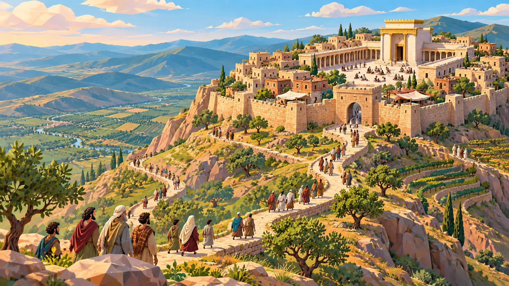

THE BOOK OF ISAIAH · D-GROUPS
The Holy One
who saves.
From a vision of holiness to the hope of new creation.
Read closely. Discover connections. Grow together.
In Chrome, open the ⋮ menu. Choose Install app, or Add to Home screen and then Install.

Opening Isaiah…